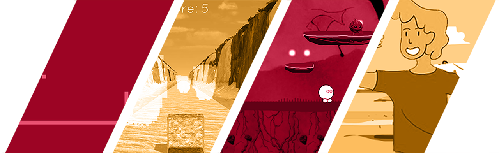

oi! sou matheus argolo
sou game designer e acredito que um jogo é mais do que diversão...
vamos trabalhar juntos para criar algo incrível?

meus jogos


Habilidades & Ferramentas
Design de Jogos
UX/UI para Jogos
Ferramentas
Soft Skills
Depoimentos
– Valdemir Segundo, Game Developer
– Marina Rocha, Artista 2D
Contato
Entre em contato preenchendo o formulário abaixo: